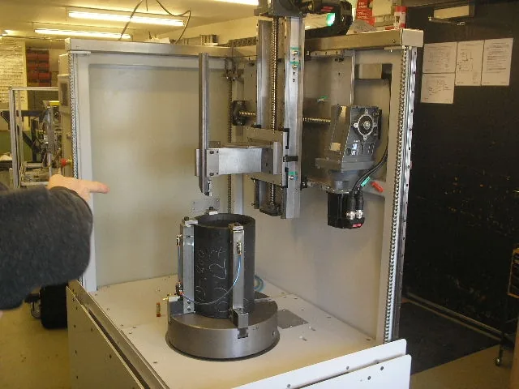

ENGINEERING PROJECTSBuilt for the
Built for the
production problem.
Explore selected machines and retrofits through the application, engineering decisions, controls and machine views that shaped the final solution.
SELECTED CASESSee how the machine
See how the machine
comes together.
Each case brings the application, controls, machine configuration and project media together so you can judge experience relevant to your own requirement.
MORE VSK ENGINEERINGMore machines.
More machines.
More applications.
Explore additional machine builds, process equipment and retrofit work from the wider VSK portfolio.
ENGINEERING DEPTHTen stories up front.
Ten stories up front.
Fifty-four references underneath.
When you need to go deeper, search the complete Engineering Archive or browse the full visual gallery project by project.